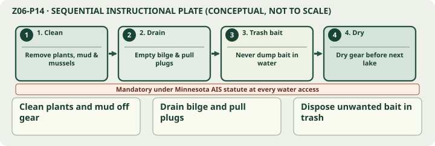

Z06-P14 · Hunting and fishing · New manuscript
Aquatic Invasive Species: Clean, Drain, Dry and Bait Disposal Law
Comply with Minnesota Aquatic Invasive Species (AIS) statutes whenever moving boats, kayaks, waders, or fishing gear between waters.
When it applies · All watercraft launches, shore waders, ice gear, and live-bait transport in Minnesota.
Equipment · Drain plug wrench, towel/brush, trash bag for unwanted bait.

Actions
- Clean all visible aquatic plants, zebra mussels, and mud from boats, trailers, kayaks, anchors, waders, and fishing nets before leaving the water access.[H07]
- Drain all water from bilges, livewells, and bait containers and keep drain plugs removed during highway transport as required by Minnesota law.[H07]
- Dispose of unwanted live bait in trash receptacles—never dump bait or lake water into another waterbody—and dry gear thoroughly before visiting new waters.[H07]
Failure recognition · Hauling a wet livewell, weed-draped anchor, or leftover minnows between lakes spreads zebra mussels, spiny waterflea, and fish diseases illegally.[H07]
Verify · Plugs are pulled, hulls/waders/nets are visibly plant- and water-free, and zero live fish or lake water leaves infested accesses.[H07]
Stop or change course · Stop moving watercraft or wet waders to another watershed until full cleaning, draining, and drying or approved decontamination is complete.[H07]
Evidence and editorial notes
- H07 · Minnesota DNR · Aquatic Invasive Species Laws and Clean-Drain-Dry Rules (Current web edition)
- Section: Clean, Drain, Dry aquatic invasive species law · Conditions: Moving watercraft, angling gear, waders, or bait between waterbodies
Support: Minnesota law requires cleaning aquatic plants/zebra mussels from gear, draining all water with plugs removed, and disposing of unwanted bait in trash.
Limitations: Never transport live fish or lake water away from infested waters except under explicit statutory permit. · Conflicting evidence: None noted.
Editorial note: Mandatory Z06 conservation/AIS compliance. · Specialist reviewer: Aquatic invasive species specialist
Primary source · checked 2026-11-25
Source lineage · New manuscript (Z06 P17 conservation law) · Classification · New manuscript.